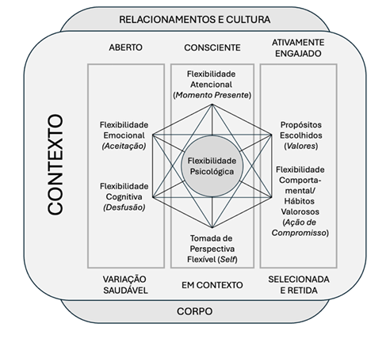
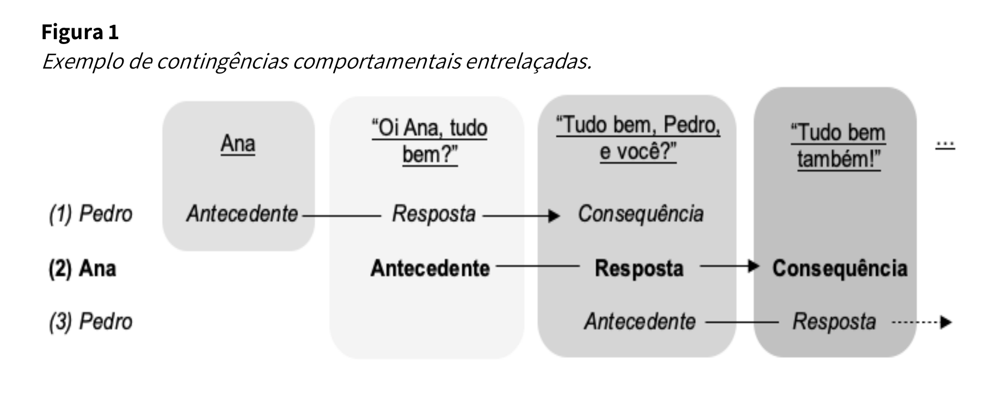
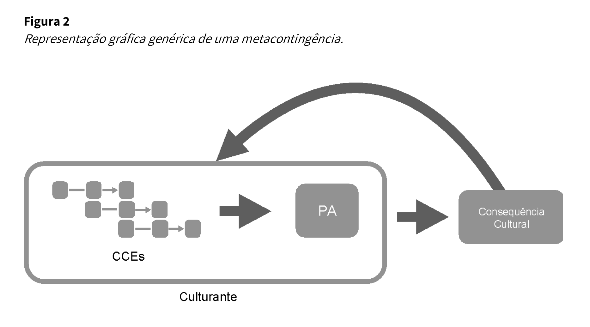

apresentação do projeto
O que é o Hexaverso do ponto de vista científico, para além da camada de RPG.
Hexaverso é um RPG narrativo-comportamental desenvolvido na Universidade Estadual de Londrina, com financiamento do CNPq (Chamada Universal MCTI n. 10/2023, Processo 408699/2023-0). Embora funcione como jogo, sua estrutura foi desenhada como artefato de intervenção e observação: cada escolha de design foi tomada para permitir que a experiência lúdica produza dados comportamentais analisáveis.
A premissa central é que ambientes estruturados de ficção cooperativa podem funcionar como ambientes de contingência — espaços em que comportamentos-alvo emergem, podem ser observados sistematicamente, e podem ser consequenciados de maneira funcional sem que o participante se sinta em contexto avaliativo. Isso abre uma janela incomum para estudar repertórios individuais e coletivos em tempo real, em condições que escapam dos limites clássicos do laboratório e das vinhetas escritas.
Do ponto de vista aplicado, o jogo pode ser utilizado como intervenção socioeducativa em contextos escolares, clínicos e comunitários, com foco no desenvolvimento de repertórios sociocognitivos complexos. Do ponto de vista da pesquisa, o Hexaverso oferece uma plataforma padronizável para estudos sobre metacontingências, flexibilidade psicológica e comportamento cooperativo em grupo.
referenciais teóricos
Duas lentes complementares estruturam o Hexaverso: uma individual (Hexaflex/ACT), outra coletiva (Metacontingência).
Hexaverso articula duas tradições contemporâneas da Análise do Comportamento: a abordagem contextual-individual da Acceptance and Commitment Therapy (ACT), centrada no modelo Hexaflex de flexibilidade psicológica, e a abordagem cultural-coletiva derivada da teoria das metacontingências e culturantes.
a lente individual — hexaflex / act
O Hexaflex é um modelo desenvolvido por Steven C. Hayes e colaboradores no âmbito da ACT. Organiza seis processos psicológicos interdependentes — aceitação, desfusão cognitiva, eu-como-contexto, contato com o momento presente, valores e ação comprometida — como componentes da flexibilidade psicológica. Cada um dos seis personagens jogáveis do Hexaverso foi desenhado para representar, operacionalmente, um desses processos.

Os seis processos do Hexaflex estão organizados em três pilares funcionais (Perez & Hayes, 2025). O pilar Aberto reúne aceitação e desfusão — processos que permitem ao indivíduo se relacionar de forma mais flexível com experiências internas difíceis, sem evitá-las ou ser dominado por elas. O pilar Consciente agrupa o eu-como-contexto e o contato com o momento presente — processos atencionais e perspectivos que ancoram o comportamento no aqui-e-agora. O pilar Ativamente Engajado compreende valores e ação comprometida — processos motivacionais que direcionam o comportamento para escolhas significativas.
Perez, W. F., & Hayes, S. C. (2025). Terapia de Aceitação e Compromisso (ACT): um guia rápido. Perspectivas em Análise do Comportamento, 005–017. https://doi.org/10.18761/PAC.ACT.00EN
a lente coletiva — metacontingência
O conceito de metacontingência, formulado por Sigrid S. Glenn (1986; 1988), propõe uma unidade de análise para fenômenos sociais e culturais que vai além do comportamento individual. Uma metacontingência descreve a relação de contingência entre um culturante — composto por Contingências Comportamentais Entrelaçadas (CCEs) e seu produto agregado (PA) — e uma consequência cultural, que aumenta ou diminui a probabilidade futura desse padrão de interação (Angelo et al., 2024; Glenn et al., 2016). A metacontingência se insere no terceiro nível de seleção por consequências descrito por Skinner (1981): assim como a filogênese seleciona características físicas de espécies e a ontogênese seleciona operantes individuais, as metacontingências explicariam a variação e seleção de padrões culturais.
contingências comportamentais entrelaçadas (CCEs)
CCEs são um conjunto de contingências de reforçamento que ocorrem quando há interação social entre duas ou mais pessoas. O que as distingue de uma simples cadeia de respostas individuais é o entrelaçamento: o comportamento de cada pessoa funciona simultaneamente como consequência para o outro e como antecedente para a próxima resposta — tornando as contingências interdependentes. A Figura 1 abaixo ilustra esse entrelaçamento em um diálogo simples entre Pedro e Ana: a resposta de Pedro é antecedente para a resposta de Ana, que é ao mesmo tempo consequência de Pedro e antecedente para sua próxima fala.

CCEs podem envolver desde duas pessoas movendo um objeto pesado até centenas de trabalhadores numa linha de produção, legisladores implementando uma lei ou jogadores coordenando uma jogada. O que importa analiticamente não é o número de pessoas, mas o padrão de interdependência entre suas contingências. Esse padrão coordenado produz um efeito no ambiente que nenhum indivíduo isolado produziria: o produto agregado (PA). O PA é o efeito direto do entrelaçamento — um carro produzido, um evento realizado, uma lei aprovada, uma partida ganha. Importante: o PA não precisa funcionar como reforçador para todos os indivíduos cujos comportamentos o compõem; cada um pode ter seus próprios reforçadores particulares ao longo do processo.
o culturante e a consequência cultural
O conjunto formado pelas CCEs e pelo PA é chamado de culturante — a unidade básica da metacontingência. O culturante é selecionado (ou sofre variação) em função de uma consequência cultural: um evento externo ao culturante que retroage sobre ele, aumentando ou diminuindo a probabilidade de sua recorrência futura. Consequências culturais podem ter função análoga a reforçadores (aumentando a probabilidade do culturante) ou a punidores (reduzindo-a). Uma característica fundamental do culturante é que ele pode persistir mesmo com a substituição de participantes: quando um novo membro entra num grupo, as contingências às quais é exposto são semelhantes às que já existiam, moldando seu comportamento ao padrão anterior.

No Hexaverso, essa lógica se traduz diretamente na mecânica de jogo. O grupo de jogadores produz CCEs a cada cena — escolhas coordenadas de proteção, mediação, escalada ou omissão. Essas interações geram um produto agregado narrativo (o desfecho da cena), que compõe um culturante observado e registrado pelo mestre-auxiliar. O Medidor de Integridade, operado de forma oculta, funciona como a consequência cultural: retroage sobre o culturante do grupo, tornando o mundo ficcional mais aberto ou mais hostil nas sessões seguintes — sem que os jogadores vejam o número, mas sentindo suas consequências na trama.
Angelo, H. V. B. R., Souza, V. P., Izbicki, S., & Bissoli, E. B. (2024). Metacontingência: uma ferramenta conceitual para análises sociais e culturais. Revista Brasileira de Análise do Comportamento (REBAC), 20(Supl. 1), 144–155. doi:10.18542/REBAC.V20I0.16460 [introdução didática em português, com exemplos e figuras]
lógica metodológica
Como o jogo funciona, ao mesmo tempo, como intervenção e como ambiente observável.
A arquitetura de dois mestres é a escolha de design que torna tudo isso possível. O mestre principal conduz a ficção e sustenta imersão; o mestre-auxiliar ocupa o papel de observador sistemático, registrando eventos comportamentais em fichas padronizadas e operando o Medidor de Integridade como variável dependente do sistema.
Essa divisão reduz um problema clássico de intervenções lúdicas: a sobrecarga do facilitador. Quando uma única pessoa tenta narrar e observar simultaneamente, a qualidade do registro tende a degradar. Ao desdobrar os papéis, cada função é executada com a atenção que lhe é devida, e os dados gerados têm maior fidedignidade.
A campanha completa ocorre ao longo de 10 a 11 sessões estruturadas, cada uma com momentos críticos previstos para convocar processos específicos do Hexaflex. As sessões são ancoradas por medidas de linha de base aplicadas antes e depois da intervenção, permitindo avaliações pré-pós em desenhos de pesquisa aplicada.
O sistema de Companion Logs e o follow-up gamificado acrescentam uma camada de generalização: o que emerge na ficção é convidado a aparecer com nome próprio na vida do participante, sob a forma de reflexões escritas, leituras orientadas e tarefas aplicáveis entre sessões. Essas produções tornam-se elas mesmas fontes de dado qualitativo.
instrumentos padronizados
Fichas, protocolos e medidas. Todo o material é liberado sob CC BY 4.0.
PREENCHER Os arquivos serão disponibilizados em versão final na área de downloads assim que concluída a diagramação. Em caso de urgência, contate o CRIACOM.
aplique. registre.
nos mande os dados.
Estamos ativamente buscando aplicadores, escolas, grupos clínicos e pesquisadores interessados em rodar o Hexaverso em contextos reais e partilhar os dados coletados. Cada aplicação que chega ao CRIACOM ajuda a refinar o jogo, validar os instrumentos e ampliar a base empírica do projeto.
A participação é colaborativa e creditada. Aplicadores que contribuem com dados são reconhecidos em publicações decorrentes, conforme diretrizes éticas padronizadas. O material todo está sob CC BY 4.0 — você pode usar, adaptar e redistribuir, desde que atribua a autoria.
◇ o que nos ajuda a receber
- Medidas de linha de base e pós-intervenção preenchidas
- Fichas de sessão do mestre-auxiliar, uma por cena crítica
- Fichas individuais dos participantes, ao longo da campanha
- Notas livres do mestre principal (funcionou / travou / surpreendeu)
- Companion Logs dos participantes, com autorização expressa deles
- Qualquer relato qualitativo, feedback, crítica ou sugestão
- Informações de contexto: perfil do grupo, duração real, adaptações feitas
equipe & criacom
Quem está por trás do projeto.
O Hexaverso é desenvolvido no âmbito do CRIACOM — Centro de Referência de Inovação em Análise do Comportamento, na Universidade Estadual de Londrina, com financiamento do CNPq.
Universidade Estadual de Londrina (UEL)
Desenvolvedora da história e mecânicas do Hexaverso.
como citar
Se você usa o Hexaverso em pesquisa, aula, ensaio ou aplicação, queremos ser citados. Abaixo, dois formatos prontos para colar.
NEVES FILHO, H. B. et al. Hexaverso: RPG narrativo-comportamental. Universidade Estadual de Londrina / CRIACOM, 2026. Financiamento CNPq/MCTI 10/2023, Processo 408699/2023-0. Licença CC BY 4.0. Disponível em: <URL do site>. Acesso em: [data].
@misc{hexaverso2026,
author = {Neves Filho, H. B. and others},
title = {Hexaverso: RPG narrativo-comportamental},
year = {2026},
institution = {Universidade Estadual de Londrina, CRIACOM},
note = {CNPq/MCTI 10/2023, Processo 408699/2023-0},
howpublished = {\url{URL do site}},
license = {CC BY 4.0}
}
PREENCHER ao diagramar a versão final: (i) nome completo do coordenador e coautores, (ii) URL definitiva do site após publicação, (iii) eventual DOI se registrado.
Para envio de dados de aplicação, dúvidas metodológicas, propostas de colaboração, pedido de material ou qualquer contato institucional. Respondemos em até 5 dias úteis.